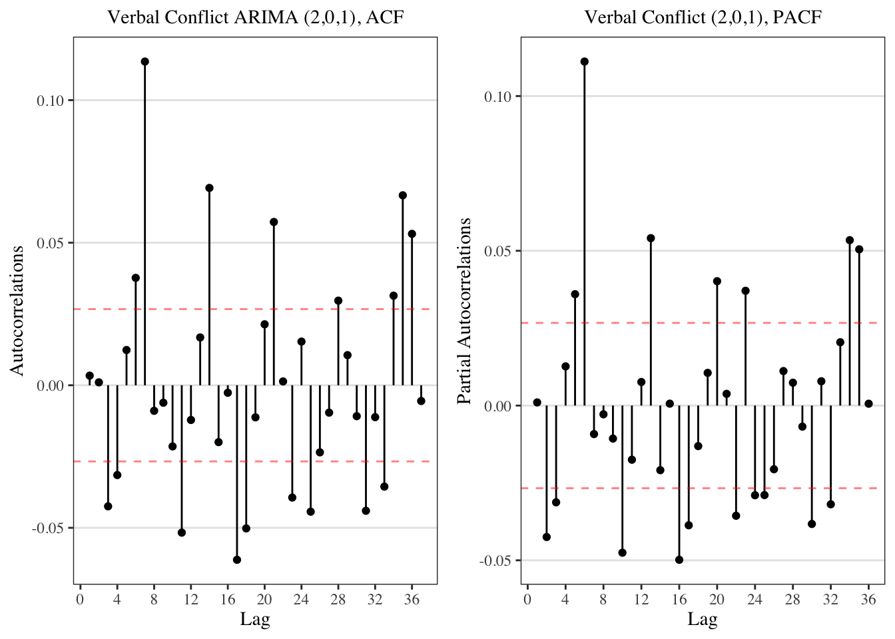
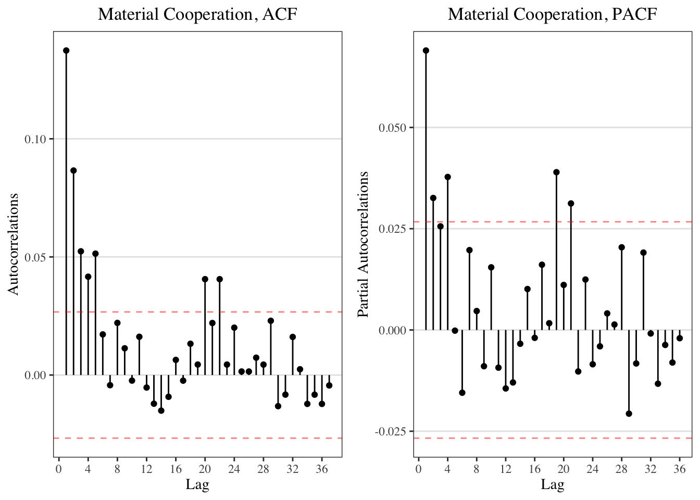

2 Time Series Modeling
Note-to-self: should I consider changing each time-series vector using something like vector <- ts(vector, frequency = frequency)? Got this thought from http://stats.stackexchange.com/questions/266036/modeling-a-time-series-with-diminishing-seasonality. While this did not solve seasonality as expected, …
## Loading required package: zoo##
## Attaching package: 'zoo'## The following objects are masked from 'package:base':
##
## as.Date, as.Date.numeric## Loading required package: timeDate## This is forecast 7.32.1 Unit Root Test
2.1.1 Verbal Conflict (Stationary)
| Test Statistics | 10pct | 5pct | 1pct | Integrated at 95% level |
|---|---|---|---|---|
| -10.39 | -3.12 | -3.41 | -3.96 | No |
2.1.2 Verbal Cooperation (Stationary)
| Test Statistics | 10pct | 5pct | 1pct | Integrated at 95% level |
|---|---|---|---|---|
| -16.99 | -3.12 | -3.41 | -3.96 | No |
2.1.3 Material Conflict (Stationary)
| Test Statistics | 10pct | 5pct | 1pct | Integrated at 95% level |
|---|---|---|---|---|
| -21.05 | -3.12 | -3.41 | -3.96 | No |
2.1.4 Material Cooperation (Stationary)
| Test Statistics | 10pct | 5pct | 1pct | Integrated at 95% level |
|---|---|---|---|---|
| -28.37 | -3.12 | -3.41 | -3.96 | No |
2.2 Specifying AutoRegression & Moving Average (ARMA)
2.2.1 Verbal Conflict (ARMA 1,7?)
2.2.1.1 ACF & PACF
Does it look like seasonality?
| term | estimate | std.error | statistic | p.value |
|---|---|---|---|---|
| (Intercept) | 0.3043 | 0.0878 | 3.4643 | 0.0005 |
| factor(ritualized_day$wday)2 | 0.5319 | 0.1242 | 4.2816 | 0.0000 |
| factor(ritualized_day$wday)3 | 0.7645 | 0.1242 | 6.1567 | 0.0000 |
| factor(ritualized_day$wday)4 | 0.6386 | 0.1242 | 5.1422 | 0.0000 |
| factor(ritualized_day$wday)5 | 0.6645 | 0.1242 | 5.3493 | 0.0000 |
| factor(ritualized_day$wday)6 | 0.7334 | 0.1242 | 5.9042 | 0.0000 |
| factor(ritualized_day$wday)7 | 0.0273 | 0.1242 | 0.2198 | 0.8260 |

2.2.1.2 Fitting
##
## Box-Pierce test
##
## data: vconf$residuals
## X-squared = 0.097, df = 1, p-value = 0.82.2.2 Verbal Cooperation (ARMA 1)
2.2.2.1 ACF

2.2.2.2 Fitting ARMA
##
## Box-Pierce test
##
## data: vcoop$residuals
## X-squared = 0.14, df = 1, p-value = 0.7
2.2.3 Material Conflict (ARIMA 1,0,1)
2.2.3.1 ACF

2.2.3.2 Fitting
##
## Box-Pierce test
##
## data: mconf$residuals
## X-squared = 6e-04, df = 1, p-value = 1
2.2.4 Material Cooperation (ARIMA 1,0,1)
2.2.4.1 ACF
2.2.4.2 Fitting
##
## Box-Pierce test
##
## data: mcoop$residuals
## X-squared = 0.073, df = 1, p-value = 0.8